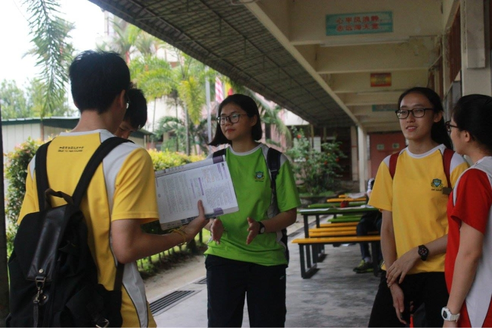
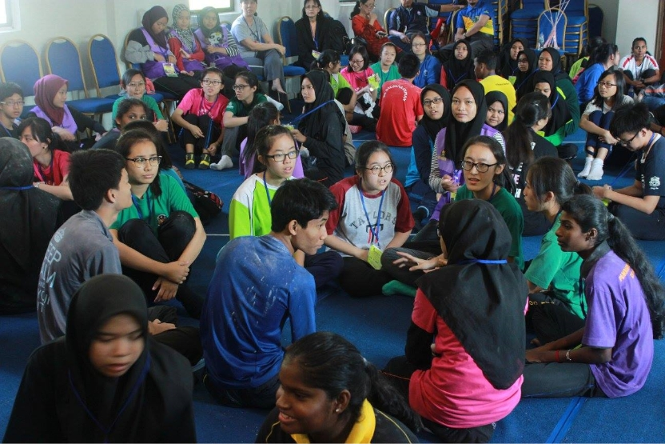
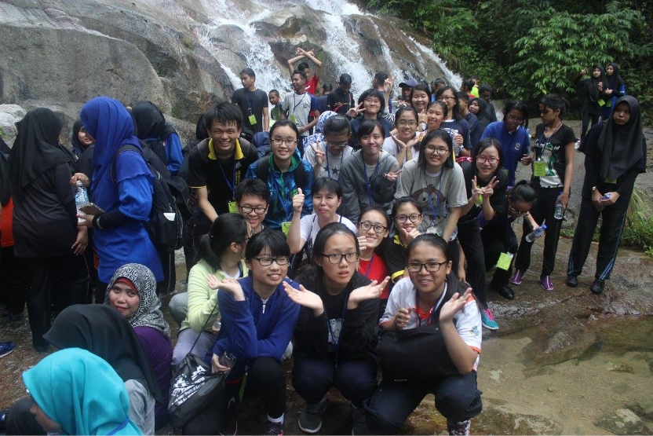
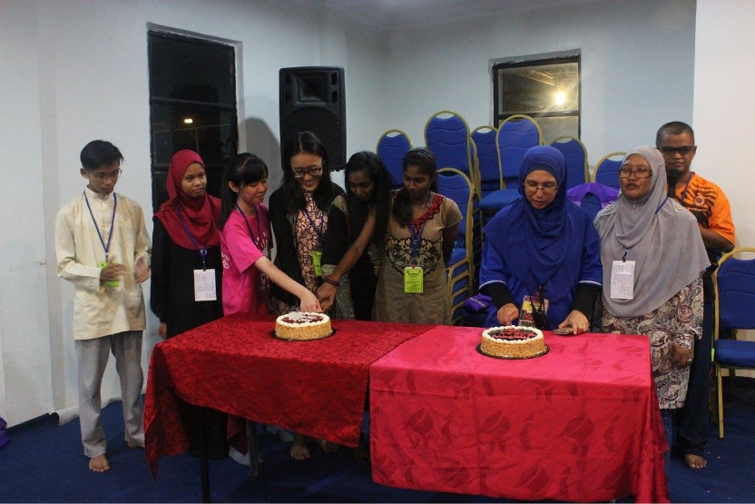

PRS is divided into four stages and each stages represents the level of PRS members. The following stages are Bongsu, Muda, Sulong and Bestari. I was in the Muda stage when I was form 4. At that time, my few friends and me were fortunate to be selected by teacher to participated in a cross-school camp in Kajang area accompanied by seniors. As far as I know, the teacher chose a few of us from form 4 PRS to participate together was because there are few places on the list. For me, this is a good opportunity to learn something from other schools in the camp.


{kind=link}
{kind=link}
This is a multi-ethnic camp because it was participated by many other schools. Therefore, we will met different races friends and play games with them in this camp. This is a very special experience as I was from a national Chinese school. So, I rarely have the opportunity to communicate with other races in Malay or English. I was thankful that they are very friendly and we have no difficulty in communication. Hence, we all proceeded quite smoothly in our activities without bad things happened. In this camp, I even experienced the warmth of different races working together to help each other. In a morning, we all participated in a jungle hiking. At first, everyone was afraid that there would be dangers or accidents during the climbing. However, in the process of climbing mountains, we all cooperate with each other. When encountering a relatively sloping mountain road, I and others were willing to reach out and pull them up. Not only that, we will also remind each other of the uneven road ahead to avoid accidental injuries to uninformed persons. After finished hiking, I felt extremely fulfilled and happy because this is the first time that I cooperated with different races friends to achieved something difficult.


{kind=link}
{kind=link}
The most impressive activity in the camp was the talent night. On the last day of the camp, everyone changed into the clothes they had prepared before went to the camp. The theme of this talent night was race and culture. Everyone were needed to show the harmony and culture of various ethnic groups in the performance. In the early days of the performance, I had discussed the content of the performance with my teammates in a happy environment. In the end, we chose to combine traditional dances of various ethnic groups into one song. Of course, we also prepared the necessary items for this performance. That night, each group's performance was very unique and very exciting. When it was our turn, although there were some mistakes in the middle music playback, it still did not affect our ability to bring joy to everyone and to complete the performance smoothly. Although the most exciting group’s performance in the end was not us, we were still happy because we worked together to complete the performance successfully. Just when I thought the whole day activities was over, the teachers suddenly pushed the cake into the auditorium while singing the birthday song. It turned out that they prepared birthday surprises for the students who had birthday on that month on this day. This was unexpected for all of us. In the end, the camp ended in a joyful and moving surrounding. After all, we returned to our home in the next morning.